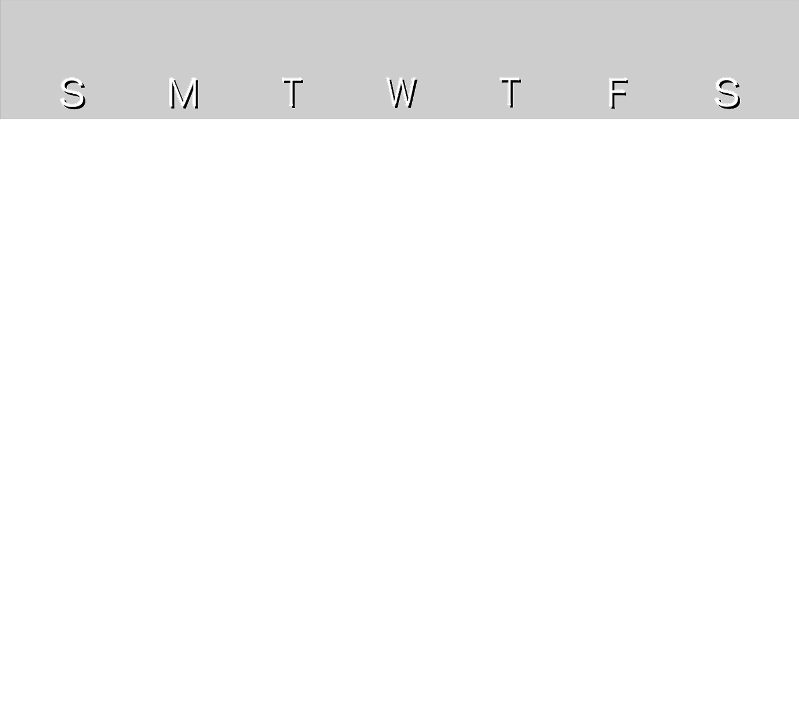
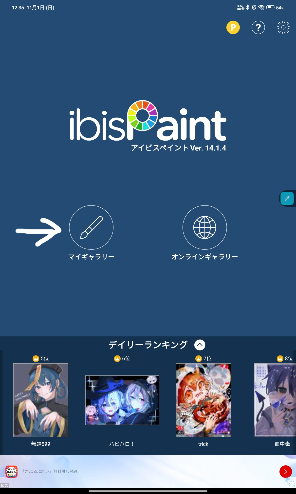
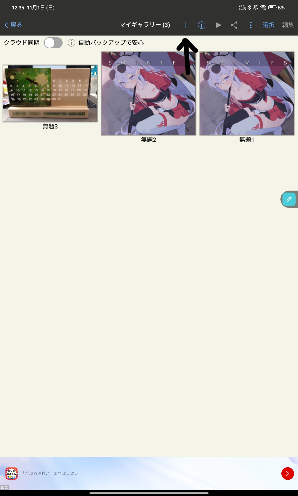
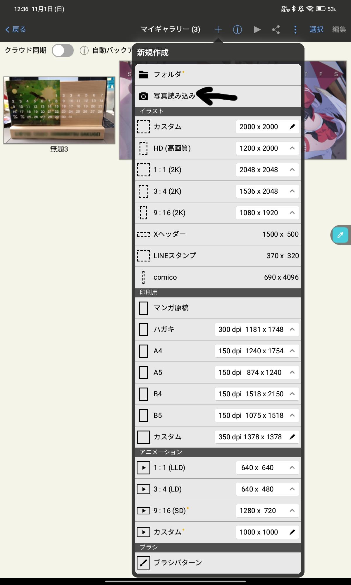
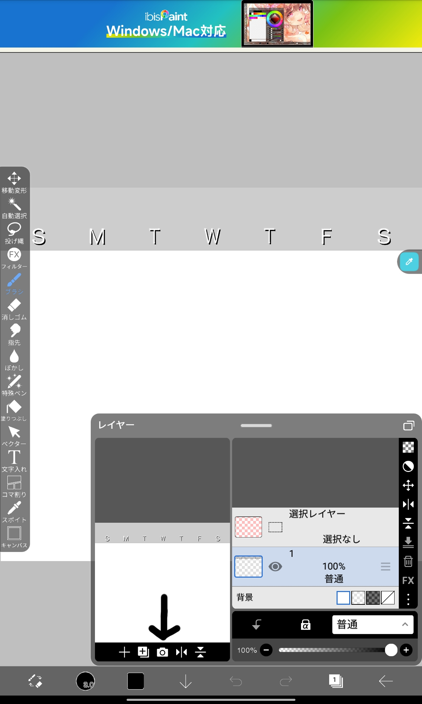
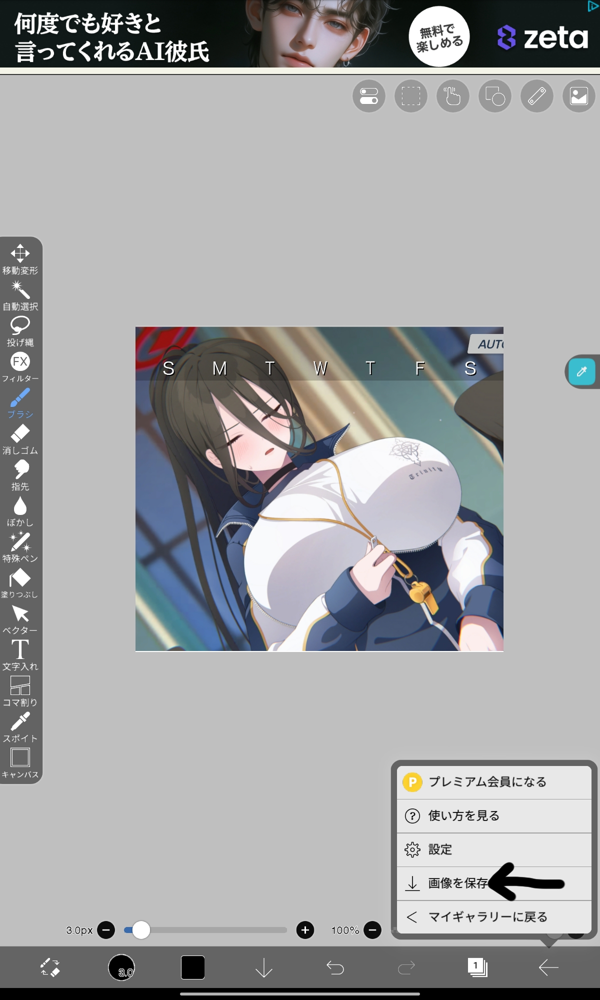
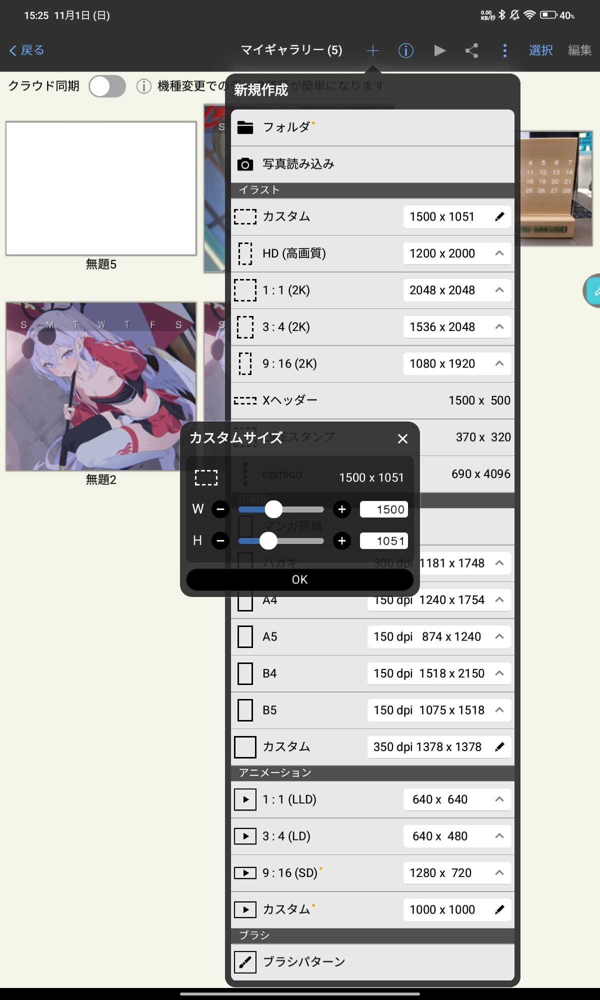
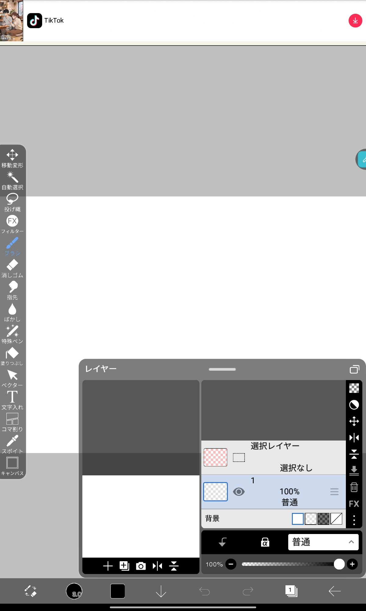
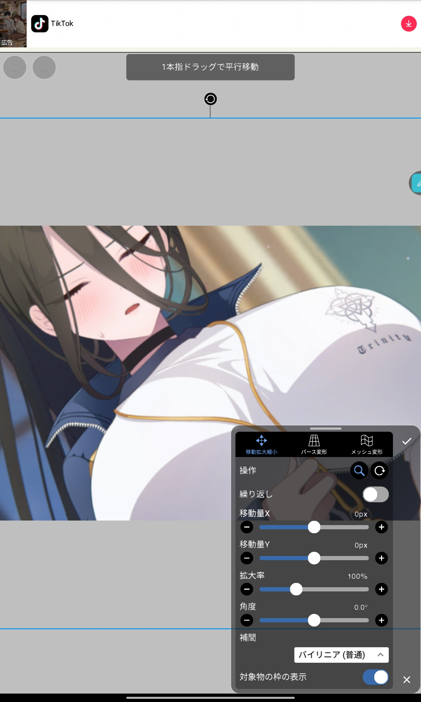
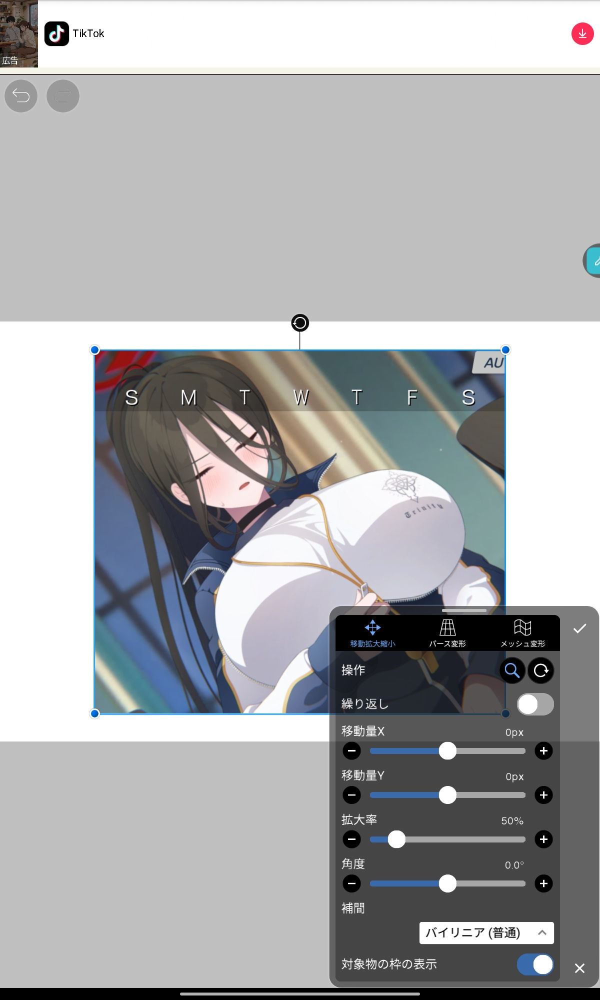

アイビスペイント等の画像編集アプリで、この画像を一番上のレイヤーに配置して貰えばいいと思われーーー
ただ、プリントするならコンビニプリントか自宅のプリンターを使うのがいいかも(近所のスーパーでやったらあまりいい感じにならなかった)
1 マイギャラリーから

2 上あたりにある＋ボタンを押し

3 写真読み込みから透過素材を読み込み

4 下の四角1を押して写真マークから背景にしたい画像を読み込む

5 レイヤー順序に気をつけて←ボタンから画像を保存。jpegでもpngでも可

6 マイギャラリーに戻り、＋、イラスト枠のカスタムから1500*1051で新規作成

7 4と同様にして5で保存した画像を追加

8 拡大率50％で配置し、pngまたはjpegで出力


8で出力した画像を写真紙L判で印刷すると綺麗になる。
自宅のプリンタを使う場合はフチ無しで印刷するとよいかも。